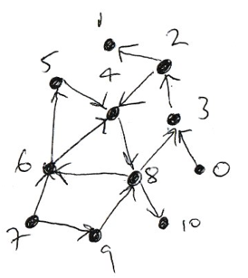

3. Exercises#
Exercise 3.1
Let \(G\) be the undirected graph represented by the following adjacency list.
[[5, 6], [7], [7], [], [7], [0, 6], [0, 5], [1, 2, 4]]
1. Sketch (by hand) the undirected graph \(G\) and (by eye) determine the connected components.
2. Using a for loop, apply the function bfs(adj, i) to every node of \(G\) and print the result for each.
3. The distance matrix of a graph is an n by n array d such that d[i,j] is the path distance between node i and node j. Calculate the distance matrix of \(G\).
Exercise 3.2
1. Determine the adjacency list of the directed graph below.

2. Write a function print_length_2_walks(adj, i) which prints out all length 2 walks starting from node i. Test that it produces the correct output for node 8:
>>> print_length_3_walks(adj, 8)
8 3 2
8 6 4
8 6 5
3. Write a function print_length_2_paths(adj, i) which prints out all length 2 paths starting from node i.
4. Under what circumstances would the two functions produce different results?
Exercise 3.3
The reverse of a directed graph is is the graph formed by reversing the directions of its edges.
https://en.wikipedia.org/wiki/Transpose_graph
1. Sketch the reverse of the directed graph of the egg-laying circuit and write down its adjacency list.
2. Write a function reverse(adj) which reverses the adjacency list adj. That is, if adj is the adjacency list of a directed graph, then reverse(adj) is the adjacency list of the reverse graph.
3. Check that your function correctly reverses the adjacency list of the egg-laying circuit.